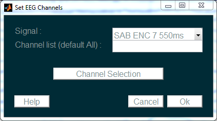

EEG Channels¶
When loading a signal micMac will try to identify EEG channels based on their name. If the name of the channel starts by ‘EEG’ it will be set as an EEG channel. If none of the channel names contains ‘EEG’, all channels are set as EEG channels.
The EEG channel indexing modify the behaviour of some functions. For instance, when filtering a signal, only EEG channels will be filtered, non-EEG channels will be copied in the output signal without filtering.

EEG channels can be selected using the Channel Selection tool.